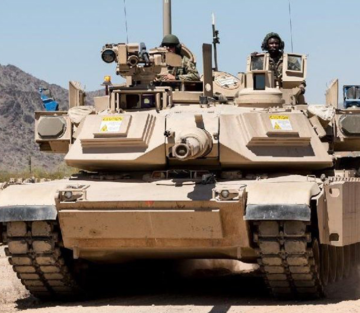

M1 Abrams
Jego produkcja rozpoczęła się w roku 1980. Istniejące czołgi M1 są stale modernizowane. Czołg został nazwany imieniem generała Creightona Abramsa – dowódcy 37 Batalionu Pancernego Armii Stanów Zjednoczonych w czasie II wojny światowej, a później dowódcy wojsk amerykańskich biorących udział w wojnie wietnamskiej
Żaden abrams nie został nigdy zniszczony w wyniku trafienia z wrogiego czołgu, jednakże pewna liczba została uszkodzona w zasadzkach przy użyciu granatników przeciwpancernych oraz ppk krótkiego zasięgu.
Prace nad najnowszym brytyjskim czołgiem podstawowym, następcą Challengera 1 i Chieftaina rozpoczęto w 1986 r. Motywacją do rozpoczęcia praco był fakt, iż Challenger 1 nie spełnił pokładanych w nim nadziei perspektywicznego czołgu III generacji.


Ostatnia aktualizacja: 17.11.2019